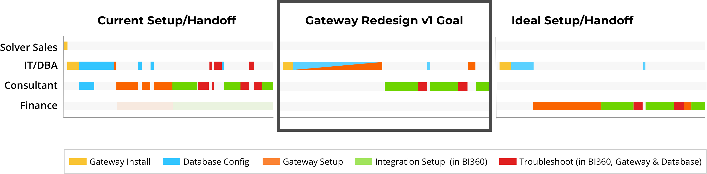
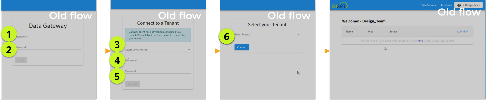
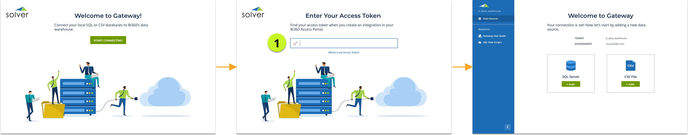
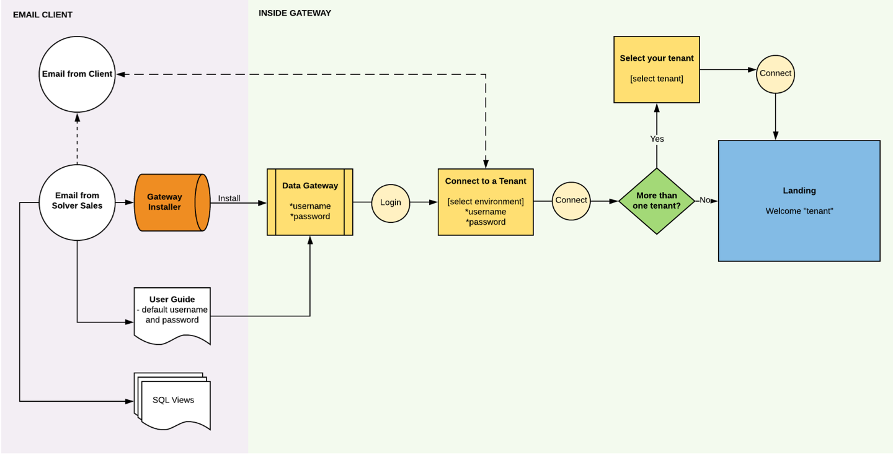
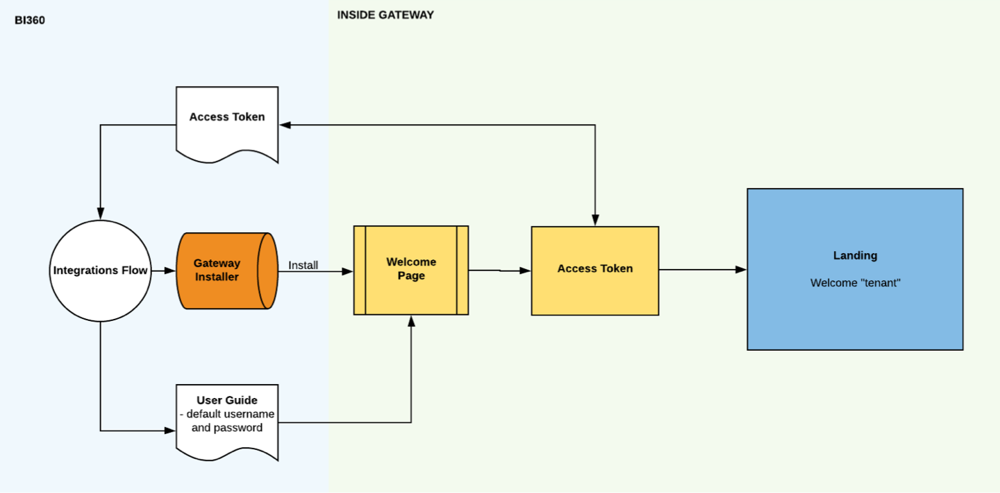

Solver
Gateway Desktop App
Background
What is Gateway?
Solver’s main product is a cloud-based web application called BI360 used by corporate teams to analyze financial data. Gateway is a supplementary desktop application that customers with on-premise data sources use to integrate their data into BI360.
My Role
As the Product Manager and Product Design Lead on this project, it was my job to formulate a strategic plan to reconcile the short-term project request (revamping the application to show forward progress with potential business partners) with our company’s long term goal of bringing Solver’s highly technical products up to modern standards of customer facing technology.
Research
I conducted user interviews to understand the process of setting up Gateway, who was involved and what it entailed. I also walked through the current product to identify problems and pain points that we could improve on.
Who are our users?
In-House Customer Users (User Type 1)
These are the personnel from our customer’s company who use or are involved in BI360 maintenance or setup.
- IT Team
- Database Administrator
- Database Administrator
Hired/Non-Customer Users (User Type 2)
These are people outside their organization who our customers pay to set up and maintain BI360. These users make up the majority of Gateway’s users.
- Solver Consultant
- Solver Partner
- Solver Sales Team
Use Cases
-
1
I am a user who setting up Gateway for the first time
-
2
I am a user who is updating/ adding a data source in Gateway
-
3
I am a user investigating an error that showed up in BI360 by going into Gateway.
Use Case #3 is important but under-utilized due to Gateway's confusing interface.
Formulating a Strategy
With input from our Dev, Support, Marketing and executive buyoff, I evaluated the risks and benefits of this project, then outlined a strategic release plan for Gateway’s lifecycle and put together product requirements for this first release.
Redesign v1.0 Goals
- Begin the long-term goal of changing our user from hired partners or consultants (user type 2) to our direct paying customers (user type 1).
- Improve handoff and reduce the number of people involved.
- Lowering the number of support tickets that come in due to not performing use case #3.
- Demonstrate forward progress on our products to potential business partners.
v1.0 Gateway Goals in BI360 Product Lifecycle
Solutions
- Simplify the onboarding flow
- Make information and resources available contextually.
- Clearly demonstrate Gateway’s capabilities.
- Rebranding Gateway’s ultra-technical, utilitarian personality to be friendly, transparent and helpful.
Flow and Architecture
Simplify the Onboarding Flow
Because the main use case is a user setting up the application for the first time, I concentrated on optmizing the onboarding flow, condensing it into 1 step vs 6.
Old Flow: 6 Steps
New Flow: 1 Step
Simplify the Complete Flow
I improved not only on the in-app flow, but the complete user flow which includes getting resources from external sources.
Old Flow
New Flow
Make Information Available Contextually
I included the user guide and extra sql views directly into the application, so that the user would no longer have to grab those resources from email, or external online resources. After talking to multiple users, I changed the design to serve up the most relevent information when onboarding and troubleshooting.
Demonstrate the App's Capabilities
Condensing the site map also helped reduce the number of clicks it took users to perform common tasks that were previously not obvious capabilities in the application. This helps push our users into use case #3, troubleshooting in the Gateway application.
"View Objects" Flow
Old: 2 Clicks

Easy Comparison and Deprioritizing "No Plan"
A side-by-side layout and shortened copy allows guests to easily see the benefits of upgrading to higher tier dining plans. Placing "Continue Without a Plan" at the bottom of the page makes this option the exception to the expected behavior instead of the default. This would compel the user to read through the benefits of the different plans that we are surfacing.
Original Design
New Design
Finalizing the Design
After accounting for all the different use cases for this design and finalizing the mobile state, I handed off my redlines to the developers.